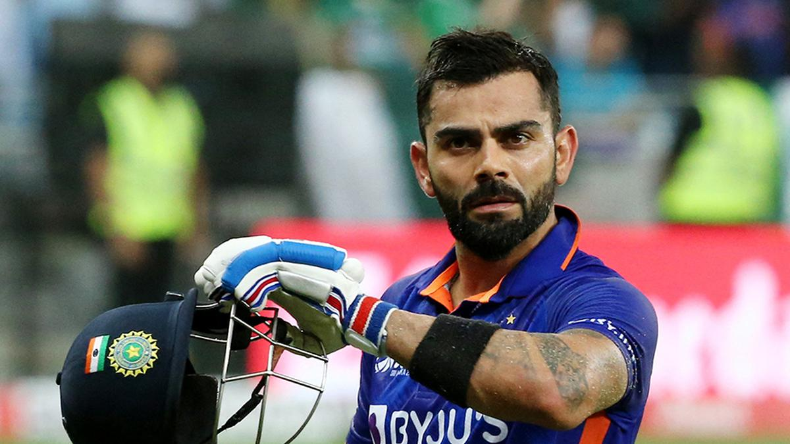

An Interesting Story to Begin With
Image Credits https://sportstar.thehindu.com/cricket/asia-cup-2023-schedule-ind-vs-pak-dates-august-31-four-matches-pakistan-hybrid-model-final-sri-lanka/article66971918.ece
Cricket is not just a sport, it's an emotion that brings together millions of people from various countries. The Asia Cup is one such event that witnesses the participation of cricket-loving nations from the continent, including India, Pakistan, Sri Lanka, Bangladesh, and Afghanistan. The 2023 edition of the Asia Cup is keenly anticipated, and cricket fans are eagerly waiting to catch a glimpse of their favorite teams in action.
The Asia Cup 2023 Dates and Countries Hosting the Matches
The Asia Cup 2023 matches will begin on August 31 and will feature four games in Pakistan and nine in Sri Lanka. The tournament is a precursor to the ICC Cricket World Cup to be held in India in 2023.
Examples of Some of the Most Memorable Asia Cup Matches
Over the years, the Asia Cup has witnessed some of the most nail-biting contests between the participating teams. Here are a few examples:
- India vs. Pakistan - 2018: The final match between the two arch-rivals was a thriller, with India registering a narrow win by just 3 wickets.
- Bangladesh vs. Sri Lanka - 2018: The opening match of the tournament saw a relentless fightback by Bangladesh, who managed to win the game by 137 runs.
- India vs. Pakistan - 2014: The pool match between India and Pakistan saw the latter emerging victorious on the back of a stunning knock by Shahid Afridi.
Case Studies of How Asia Cup Matches Can Impact the Lives of Players and Fans
The Asia Cup is much more than just a cricket tournament - it has the power to shape the lives of players and fans alike. Here are two case studies that demonstrate the impact of Asia Cup matches:
- Case Study 1 - Babar Azam (Pakistan): Babar Azam, the current captain of the Pakistan cricket team, played a crucial role in Pakistan's victory over Sri Lanka in the 2018 edition of the Asia Cup. Azam's performance in the tournament propelled him to the top of the ICC ODI rankings, making him one of the best batsmen in the world. Today, Azam is a household name in Pakistan and has a massive fan following across the globe.
- Case Study 2 - Bangladeshi Fans: The Asia Cup has been a source of immense joy for cricket fans in Bangladesh. The country's national team has performed exceptionally well in recent editions of the tournament, which has led to a surge in the country's cricketing fandom. The excitement and enthusiasm shown by Bangladeshi fans during Asia Cup matches have been captured by many media outlets and have helped portray a positive image of Bangladesh at the global level.
- The Asia Cup 2023 is an event that has grabbed the attention of cricket fans across the globe, with many eagerly awaiting the start of the tournament.
- The previous editions of the Asia Cup have produced some of the most memorable matches in cricketing history, with intense rivalries pitting some of the best teams against each other.
- The Asia Cup has the power to change the lives of players and fans, as demonstrated by the case studies mentioned above.
Reference URLs
Trending Hashtags
- #AsiaCup2023
- #CricketLife
- #PakistanVsSriLanka
- #RivalryRenewed
- #ICCWorldCup2023
Curated by Team Akash.Mittal.Blog
Share on Twitter Share on LinkedIn